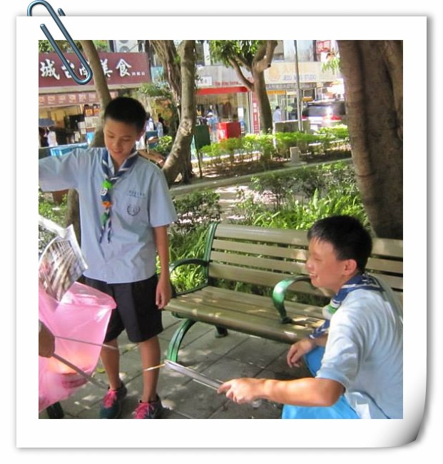
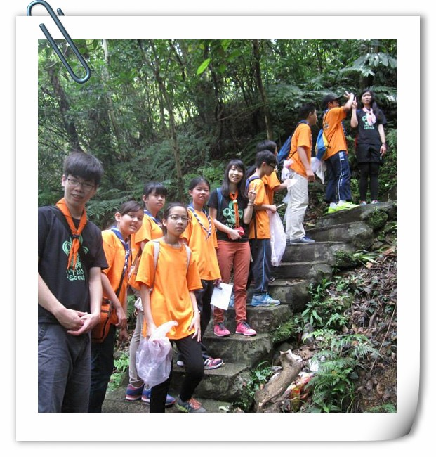

『童軍』是甚麼?
貝登堡先生曾說：「這是利用少年們的休閒時間，給他們種種健全的活動，使他們在情投意合中得到一群良伴，以及一些補充學校教育不足的訓練。」
童軍是喜愛大自然的，徒步旅行時，童軍可以從樹木的青苔判定南、北，或從日影辦識東、西。童軍能用訊號和河岸對面的夥伴溝通。童軍可以正確的使用刀、斧並生火煮飯，在野外的生活中，童軍增進各種技能，學習獨立，陶冶德性，鍛鍊體魄，結交朋友。從大自然中獲得真正的快樂。
童軍從實際生活中由「做中學」，「做而學」來訓練生活的智能，培養正確態度。待人有禮貌，為社會服務，四海之內都是朋友。
『金華童軍團』小簡介:
『金華童軍團』，全名:『台北市金華國中352複式童軍團』。
『複式童軍團』，意即除了國中男女『童軍』，高中『行義』、『蘭姐』和大學的『羅浮』也都是團裡的一份子，先談談複式團吧!高中、大學的學長姊們會傳承自己的技能與知識給國中的學弟妹，而當學弟妹們升格為學長姐時，也會反哺新一屆的學弟妹們，藉以學習服務、付出和傳承的精神，也因為如此才使得金華團能如現在的繁盛。
我們都在做什麼?
說到『童軍團』，大部分人的直覺就是:『露營』、『山林野人』、『很辛苦』、『很髒』，但實際上這都是一個太過於先入為主的想法，我們真正在做的事除了露營之外
我們服務社區：
服務校園：
親近自然：
培養專業的技能：

學習分享心得：
出國交流囉!
多元的戶外活動：
展現自我：
童軍是全方位的，我們學的不僅僅是課本上的東西，我們走出教室，謙卑的接受自然的陶冶。
看到這邊，你心動了嗎?那就快加入我們吧!
如何加入?
只要你是台北市立金華國中的7年級新生，在上學期選社團時，選童軍團就行了喔!不過要注意的是童軍團因為訓練的關係必需參加滿兩年，也就是說八年級就直接是童軍團而不必選社的!歡迎加入金華童軍團這個大家庭喔!
如果還想知道其他詳細介紹，可參照左方的連結喔!